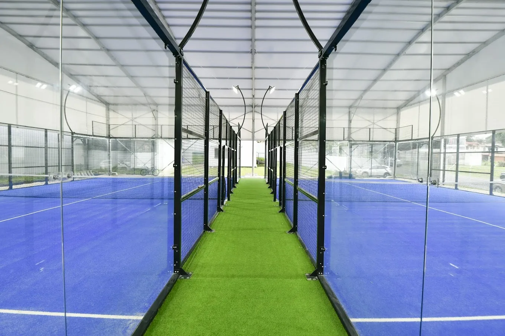
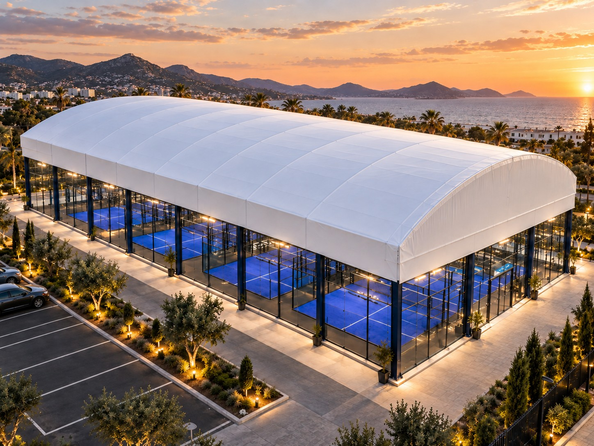
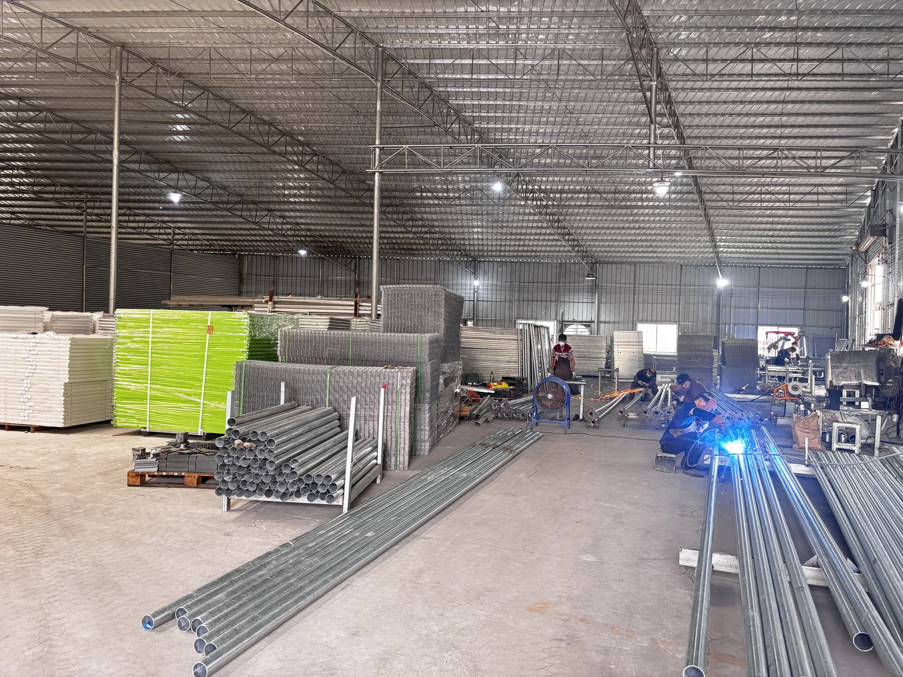
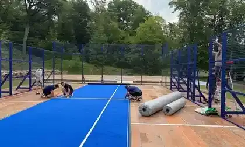
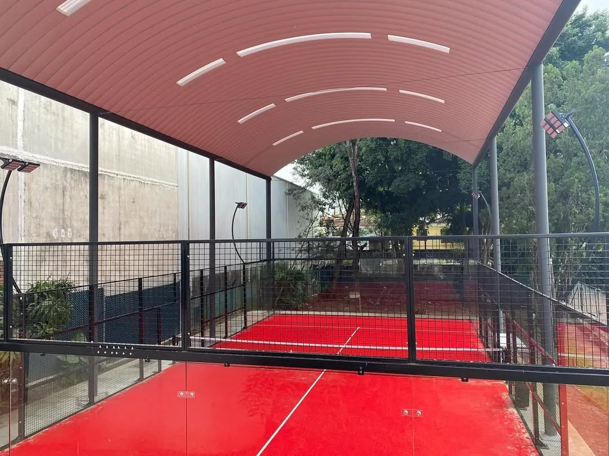
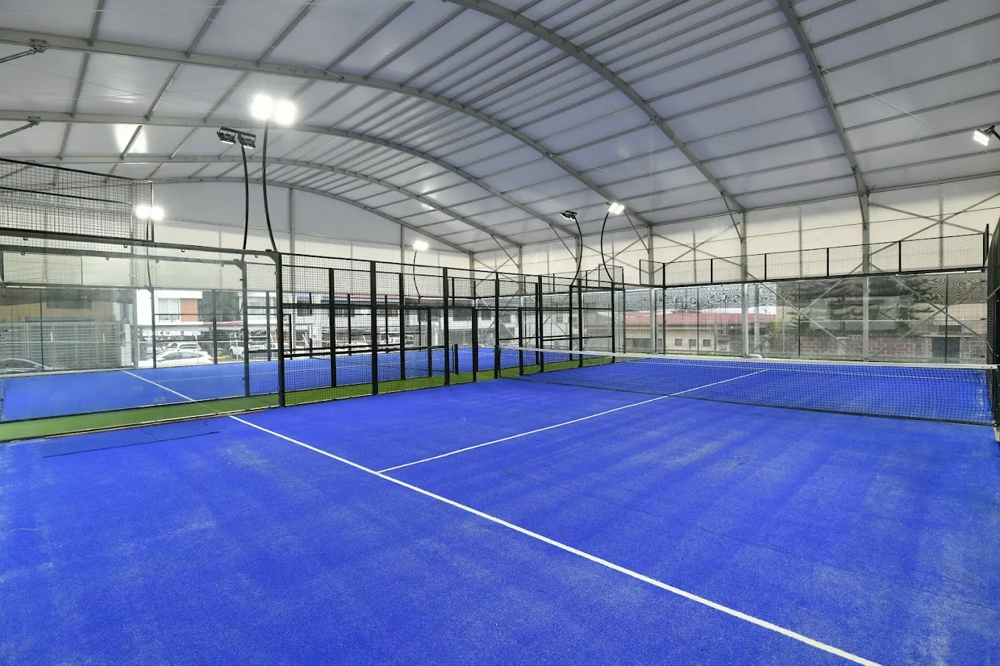
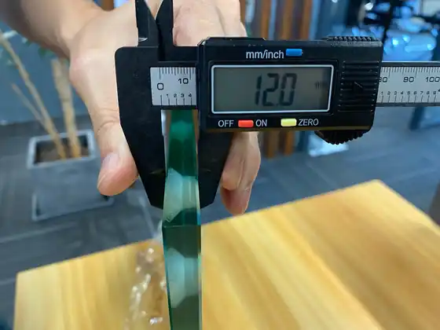

Padel court guides.
Better project decisions.
Practical guides for club owners, developers and procurement teams—from the first budget to site preparation.

Find the answer you need.

What Makes a Good Padel Court?
Use one complete checklist for foundation, steel, glass, turf, lighting, drainage, engineering, installation and maintenance.
Read master guide ↗
Warehouse vs Outdoor Land vs Rooftop
Compare rent, clear height, planning, foundations, drainage, wind, access, parking and expansion.
Read site guide ↗
Padel Club Business Plan: 15 Checks Before You Invest
Validate demand, site, lease, approvals, court count, CAPEX, OPEX, pricing, weather strategy and supplier scope.
Read investor guide ↗
Padel Club Profitability & ROI Model
Model court-hours, occupancy, pricing, coaching, operating costs, maintenance and investment risk.
Read business guide ↗
How Many Padel Courts Does a Club Need?
Compare 2, 4, 6 and 8+ court formats by demand, coaching, events, site size and investment risk.
Read planning guide ↗Padel Court Cost 2026
Compare equipment, foundation, freight, installation and roof cost factors.
Read guide ↗
Padel Court Dimensions: 20 × 10 m + Site Planning
Check official court size, clear height, circulation, multi-court spacing, drainage and roof interfaces.
Read dimensions guide ↗
Panoramic or Super Panoramic?
Compare viewing priorities and project scope.
Read guide ↗
Concrete vs Modular Padel Foundation
Compare ground, drainage, leveling and flexible-site requirements.
Read guide ↗
Padel Court Roof Cost 2026
Compare fixed, retractable and electric-tent systems plus foundations, drainage, freight and installation.
Read cost guide ↗
Padel Court Roof Construction & Planning
Compare fixed and retractable systems, aluminum-alloy retractable configuration, clearance, foundation, drainage and wind.
Read guide ↗
High-Wind & Coastal Padel Court Planning
Start with wind exposure, anchoring, foundation and corrosion protection.
Read guide ↗
How to Choose a Padel Court Manufacturer
Compare steel, glass, engineering, packing, shipping, installation support and warranty on the same basis.
Read checklist ↗
Mobile vs Fixed Padel Court
Compare leased and permanent sites, foundation strategy, relocation, drainage and full project scope.
Read guide ↗
Padel Court Installation Guide
Plan site readiness, unloading, structure, glass, turf, lighting, QC and project handover.
Read guide ↗
Padel Court Shipping Guide
Plan packing, freight, customs documents, destination handling, unloading and site delivery.
Read guide ↗
Padel Court RFQ Checklist
Build one comparable project brief, check quotation scope and compare suppliers line by line.
Use the RFQ tool ↗Use the guide, then review the matching product system.
Each guide answers a planning question. The next step is to compare that decision with the relevant SPORTENVO system page and a real project reference before requesting a quotation.
Panoramic Padel Court
For fixed commercial clubs and venues where visibility, specification and manufacturer evidence matter.
Review system ↗Mobile Padel Court
For leased, temporary or relocatable projects where permanent civil work and future relocation matter.
Review system ↗Modular Foundation Base
For selected sites requiring a coordinated modular steel foundation, level control and drainage review.
Review system ↗Padel Court with Roof
For commercial venues coordinating clear height, span, drainage, wind and foundation interfaces.
Review system ↗Anti-Hurricane Padel Court — FORCE-HX Series
For exposed coastal and high-wind locations requiring reinforced structure and project-specific engineering review.
Review system ↗What club owners are asking now.
Buyer guides built around recurring planning questions seen in current padel owner and player discussions.
Cheap Padel Courts: What Should Buyers Check?
Compare low-cost and premium quotations by steel, coating, glass, turf, engineering, logistics, installation and warranty.
Read buyer guide ↗Is 7m High Enough for an Indoor Padel Court?
Compare the 6 m minimum, the 8 m new-facility recommendation, roof trusses, lights and player experience.
Read guide ↗Can You Convert a Tennis Court Into Padel Courts?
Check the existing base, drainage, anchoring, access, lighting, noise and local approvals before ordering.
Read guide ↗Padel Club Design Checklist: 12 Things Players Notice
Plan court count, clear height, lighting, circulation, social space, acoustics, ventilation and operations before opening.
Read design guide ↗What padel operators are discussing now.
New planning guides developed from recurring questions in current owner and player conversations.
Outdoor Padel Court Without a Roof: Is It Worth It?
Compare weather downtime, drainage, wind, playable hours, roof cost and the commercial case for staying uncovered.
Read guide ↗
Indoor vs Outdoor Padel Courts
Compare playable hours, weather, rent, roof scope, ventilation and commercial risk.
Read guide ↗
Why Does a Padel Court Stay Wet?
Trace water through turf, base, perimeter drains, ring beams and roof runoff.
Read guide ↗Padel Court Lighting Without Glare
Plan lux, uniformity, vertical light, LED optics, aiming and daylight contrast.
Read guide ↗Padel Court Noise & Planning Permission
Screen neighbours, acoustics, barriers, operating hours and lighting before applying.
Read guide ↗Surface and glass questions that affect court quality.
New buyer guides built from recurring club-owner questions about playability, maintenance and safety-critical components.
Padel Court Maintenance: Schedule, Costs & Replacement
Plan turf, glass, steel, drainage, lighting, cleaning and lifecycle replacement before the venue opens.
Read guide ↗Padel Court Turf: 12mm, Sand, Dtex & Maintenance
Compare pile height, yarn data, infill, drainage, installation quality and commercial maintenance.
Read guide ↗
Padel Court Glass: 12mm, EN 12150 & Safety
Verify thickness, tempering, edge quality, holes, fixings, clearances, transport and inspection.
Read guide ↗Pair the buyer guide with a real project reference.
After understanding the planning principle, compare it with a project that resembles your venue or site condition.
Multi-court & indoor references
See Stanwell, Moscow, Yogyakarta and other club projects.
View projects ↗Resort & hotel references
See tropical, seaside and destination projects.
View projects ↗Roofed, coastal & tropical sites
See how exposure and weather change the brief.
View projects ↗Portable & modular references
Use flexible-site cases when permanent civil work is constrained.
View projects ↗Bring the site into the conversation.
A location, court count and a few site photos give the project team a useful starting point.
- Already have drawings?Include dimensions, access and existing foundations.
- Still choosing a system?Describe the venue and intended opening date.
Let’s build your court plan.
Share your country, court count and target opening date.